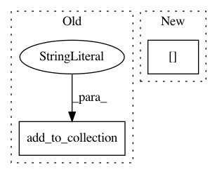

713ceaf662a02ff2966faecbe648a640ffdc0b0c,niftynet/contrib/regression_weighted_sampler/isample_regression.py,ISampleRegression,connect_data_and_network,#ISampleRegression#Any#Any#,66
Before Change
self.action_param.save_seg_dir = error_map_folder
// computes absolute error
errors = tf.abs(image - net_out)
outputs_collector.add_to_collection(
var=errors, name="window",
average_over_devices=False, collection=NETWORK_OUTPUT)
else:
outputs_collector.add_to_collection(
var=net_out, name="window",
average_over_devices=False, collection=NETWORK_OUTPUT)
After Change
self.output_decoder.prefix = ""
// computes absolute error
target = tf.cast(data_dict["output"], tf.float32)
net_out = tf.abs(target - net_out)
// window output and locations for aggregating volume results
In pattern: SUPERPATTERN
Frequency: 3
Non-data size: 2
Instances
Project Name: NifTK/NiftyNet
Commit Name: 713ceaf662a02ff2966faecbe648a640ffdc0b0c
Time: 2018-02-02
Author: wenqi.li@ucl.ac.uk
File Name: niftynet/contrib/regression_weighted_sampler/isample_regression.py
Class Name: ISampleRegression
Method Name: connect_data_and_network
Project Name: tryolabs/luminoth
Commit Name: b039cceb43f0575c863f9a36d5143bb43fe44678
Time: 2018-03-20
Author: psoto23.ps@gmail.com
File Name: luminoth/models/base/ssd_feature_extractor.py
Class Name: SSDFeatureExtractor
Method Name: _build
Project Name: tryolabs/luminoth
Commit Name: 2ba7725df0cbc3183d9cdc49f797614d24c9f80e
Time: 2017-02-23
Author: agustin@tryolabs.com
File Name: detector/detector.py
Class Name:
Method Name: metrics